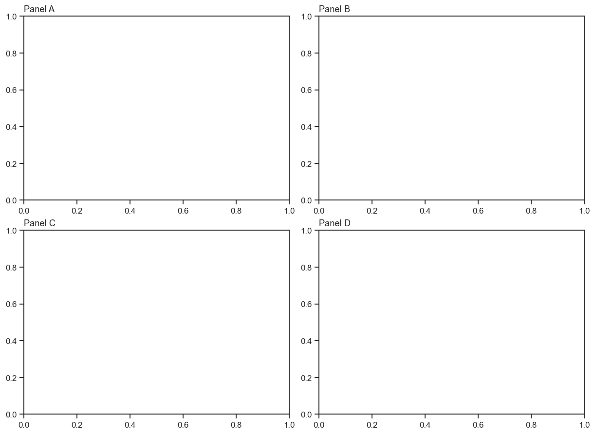
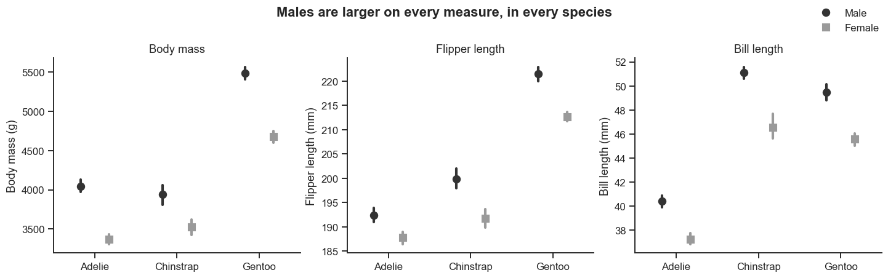

Lesson 7 - Capstone: the Penguin Field Report
The station chief at Palmer wants a one-page figure for the season's briefing. It should answer four questions: Who lives where? How big are they? Do males and females differ? Can you tell species apart by their bills? You'll use everything from Lessons 1-6.
By the end of this lesson you can:
- plan a multi-panel figure from the questions it must answer
- build it panel by panel with
plt.subplotsand axes-level functions - give a whole figure one legend, one title and a consistent color story
- review your own chart against a design checklist
import pandas as pd
import matplotlib.pyplot as plt
import seaborn as sns
sns.set_theme(style="ticks")
penguins = sns.load_dataset("penguins")
PENGUIN_COLORS = {"Adelie": "#FF8C00", "Chinstrap": "#A034F0", "Gentoo": "#159090"}
SEX_COLORS = {"Female": "#8c8c8c", "Male": "#333333"}
Step 1: questions first, charts second
| Question | Data job | Chart (lesson) |
|---|---|---|
| Who lives where? | counts by two categories | countplot (3) |
| How big are they? | distribution per group | step histplot or kdeplot (2) |
| Do males and females differ? | compare a mean across groups (zero not meaningful) | pointplot (3) |
| Can bills tell species apart? | relationship between two numbers, by group | scatterplot (1) |
Picking the chart from the question is the most important step in the whole course. If you can’t name the question a panel answers, cut the panel.
Step 2: lay out the canvas
fig, axes = plt.subplots(2, 2, figsize=(11, 8), layout="constrained")
for ax, letter in zip(axes.flat, "ABCD"):
ax.set_title(f"Panel {letter}", loc="left")

axes is a 2×2 NumPy array. Index it as axes[row, col], or flatten it with axes.flat.
Step 3: fill the panels
The full report is below. Read it panel by panel. Every line is something you’ve already met.
fig, axes = plt.subplots(2, 2, figsize=(11, 8), layout="constrained")
species_order = ["Adelie", "Chinstrap", "Gentoo"]
# A. Who lives where?
ax = axes[0, 0]
sns.countplot(data=penguins, y="island", hue="species", palette=PENGUIN_COLORS,
hue_order=species_order, order=["Biscoe", "Dream", "Torgersen"], # busiest first
legend=False, ax=ax)
ax.set(xlabel="Penguins counted", ylabel="",
title="A. Gentoos only on Biscoe, Chinstraps only on Dream")
# B. How big are they?
ax = axes[0, 1]
sns.histplot(data=penguins, x="body_mass_g", hue="species", palette=PENGUIN_COLORS,
hue_order=species_order, element="step", fill=False, linewidth=1.8,
binwidth=200, legend=False, ax=ax)
ax.xaxis.set_major_formatter(lambda v, pos: f"{v / 1000:.1f} kg")
ax.set(xlabel="Body mass", ylabel="Penguins",
title="B. Gentoos are more than 1.3 kg heavier on average")
# C. Do males and females differ?
ax = axes[1, 0]
sns.pointplot(data=penguins, x="species", y="body_mass_g", hue="sex",
order=species_order, palette=SEX_COLORS,
dodge=0.35, linestyle="none", markers=["o", "s"], ax=ax)
ax.yaxis.set_major_formatter(lambda v, pos: f"{v / 1000:.1f} kg")
ax.set(xlabel="", ylabel="Mean body mass (95% CI)",
title="C. Males outweigh females in every species")
ax.legend(title="", frameon=False, loc="upper left")
# D. Can bills tell species apart?
ax = axes[1, 1]
sns.scatterplot(data=penguins, x="bill_length_mm", y="bill_depth_mm", hue="species",
palette=PENGUIN_COLORS, hue_order=species_order, s=18, alpha=0.8,
legend=False, ax=ax)
ax.set(xlabel="Bill length (mm)", ylabel="Bill depth (mm)",
title="D. Bill shape alone nearly separates the species")
# One legend for the species colors, one title for the figure
handles = [plt.Line2D([], [], marker="o", linestyle="", color=PENGUIN_COLORS[s], label=s)
for s in species_order]
fig.legend(handles=handles, loc="outside lower center", ncols=3, frameon=False)
fig.suptitle("Palmer Station penguins: three species, three body plans",
fontsize=15, fontweight="bold")
sns.despine(fig=fig)

The design choices to notice:
- One color story. Species are the same three colors in every panel, so a single figure-level legend (
fig.legend) covers A, B and D. Panel C usesSEX_COLORS, two grays, so the two encodings can’t be confused. - Panel titles state findings and carry letters, so the chief can say “look at panel C.”
hue_ordereverywhere keeps the species in the same order in every panel.loc="outside lower center"works withlayout="constrained"and places the legend below the panels, never on the data.
Step 4: review before you share
Pre-flight checklist
- Question: Can I name the question each panel answers, and is the answer visible in five seconds?
- Form: Is the chart type right for the data’s job (Lesson 3’s bars vs. points, Lesson 4’s lines only for ordered x)?
- Honesty: Do bars start at zero? Are facet scales shared? Are error bars explained?
- Color: Is color used only where it means something, consistently, and colorblind-safe?
- Ink: Is there anything I can delete, such as a redundant legend, a heavy border, or a gridline nobody needs?
- Words: Plain-English labels with units, on axes and legends alike, and titles that state findings.
Your turn: the sex-differences report
Show a solution
fig, axes = plt.subplots(1, 3, figsize=(13, 4), layout="constrained")
measures = {"body_mass_g": "Body mass (g)",
"flipper_length_mm": "Flipper length (mm)",
"bill_length_mm": "Bill length (mm)"}
for ax, (column, label) in zip(axes, measures.items()):
sns.pointplot(data=penguins, x="species", y=column, hue="sex", palette=SEX_COLORS,
dodge=0.35, linestyle="none", markers=["o", "s"], ax=ax)
ax.set(xlabel="", ylabel=label, title=label.split(" (")[0])
ax.get_legend().remove() # one figure-level legend instead of three
handles, labels = axes[0].get_legend_handles_labels()
fig.legend(handles, labels, loc="outside upper right", frameon=False)
fig.suptitle("Males are larger on every measure, in every species", fontweight="bold")
sns.despine(fig=fig)

Final quiz
Q1. In a multi-panel figure where every panel colors by species, where should the species legend go?
fig.legend(...) or direct labels do the job once.Q2. What does layout="constrained" do in plt.subplots?
Q3. “How is body mass distributed within each species?” Which chart answers this best?
Q4. According to the pre-flight checklist, what should you confirm first before sharing a chart?
Where to next?
- seaborn’s objects interface (
seaborn.objects as so): a newer, composable API that’s worth exploring once these functions feel natural. - Interactive charts: Plotly or Altair, when readers need to hover, zoom or filter.
- Read more: Stephen Few, Show Me the Numbers. Claus Wilke, Fundamentals of Data Visualization (free online). The seaborn tutorial and gallery.
- Practice: make your own field report from another seaborn dataset, such as
sns.load_dataset("tips"),"mpg"or"taxis".
Course takeaways
- Start from the question, pick the form, then polish.
- Tidy DataFrame in, column names to channels:
x,y,hue,col,row. - Axes-level functions +
plt.subplotsfor custom layouts. Figure-level functions for quick small multiples. - Honest scales, purposeful color, direct labels, plain words.